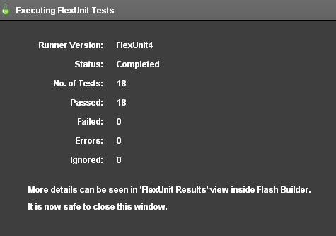
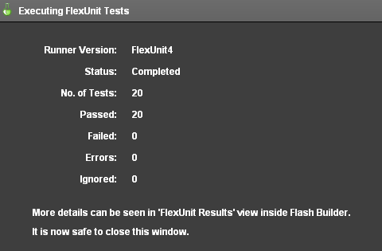
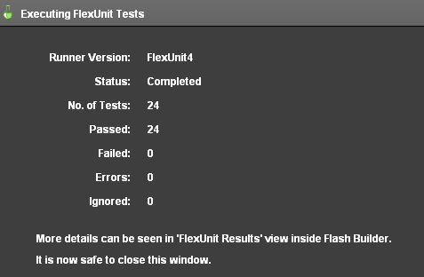

Unit 11 - Parameterized Tests
 Download Unit Project Files
Download Unit Project FilesMuch like theories, parameterized tests take a number of possible values and apply them to methods in the test case. Unlike theories, however, parameterized tests pass or fail individually, meaning that one specific data point can fail while the others pass. While Theories are best used for reversible or mathematical concepts, parameterized testing allows for passing a series of arguments and expected results to every test in a case, some tests in a case, or each to a unique test in the case.
Objectives:
After completing this lesson, you should be able to:
- Create TestNG style parameterized tests
- Create JUnit style parameterized tests
- Use complex objects in parameterized tests
- Use external data to load simple and complex objects for parameterized testing
Topics
In this unit, you will learn about the following topics:
- Use case differences from theories
- Declaring simple data for parameterization
- Types of Parameterized Tests
- Working with complex objects
- Using external data
Use case differences from theories
Theories are best used for reversible operations that must succeed in every single situation. For example, a great use of a Theory might be testing a date conversion utility. Perhaps you have a class that converts dates from Gregorian calendar dates to dates on the Buddhist calendar.
Using a theory, you would supply hundreds or thousands of Gregorian dates as data points. For each data point, you might convert the date to the equivalent Buddhist date. You would then convert each Buddhist date back to the Gregorian date and ensure it matched the original.
With the following pseudocode:
[DataPoints]
[ArrayElementType("Date")]
public static var dates:Array = [ 1/1/2009,
2/2/2010,
3/3/2011,
1/8/1970,
11/12/2090 ];
Tested under this situation
[Theory]
public function shouldConvertSuccessfully( date:Date ):void {
var convert:Converter = new Converter();
var bDate:BDate = converter.convertToBuddhistDate( date );
var gDate:Date = converter.convertToGregorianDate( bDate );
assertEquals( date, gDate );
}
This type of reversibility is the hallmark of a good theory case.
Also, remember that Theories are about using combinations of data. Given the following pseudocode:
[DataPoints]
[ArrayElementType("String")]
public static var dates:Array = [ "Trevor", "Joe", "Rob", "Steve" ];
[Theory]
public function traceNames( name1:String, name2:String ):void {
trace( name1 + " - " + name2 );
}
The expected output is:
Trevor - Trevor
Trevor - Joe
Trevor - Rob
Trevor - Steve
Joe - Trevor
Joe - Joe
Joe - Rob
Joe - Steve
Rob - Trevor
Rob - Joe
Rob - Rob
Rob - Steve
Steve - Trevor
Steve - Joe
Steve - Rob
Steve - Steve
This use of data point combinations starkly contrasts the use case for Parameterized testing that you will learn in the remainder of the lesson.
Declaring simple data for parameterization
Parameterized test cases, like Theories, have methods that accept parameters. However, that is where the comparison ends. Parameterized testing gives us a way to create tests that will use a multitude of known parameters and results. The intention of the Parameterized test is to eliminate the need to copy and paste the same test multiple times, simply changing the input values.
Parameterized tests require the Parameterized runner included with FlexUnit 4.1 and later. To use the parameterized test runner, add the RunWith metadata to the class definition.
[RunWith("org.flexunit.runners.Parameterized")]
Parameter data is provided as an array. Inside of the array, there is an array for each argument set to be passed for each test case. For example:
public static var names:Array = [
[ "Stevens", "Mary", "Mary Stevens" ],
[ "Doe", "John", "John Doe" ] ];
[Test]
public function nameCombinerTest( lastName:String, firstName:String,
expectedResult:String ):void {
assertEquals( expectedResult, ( firstName + " " + lastName ) );
}
There are actually two types of Parameterized tests supported by FlexUnit 4.x, which you will learn to use next.
Types of parameterized test
To use any form of parameterized tests requires a custom runner. FlexUnit 4.1 includes the ParameterizedRunner which can run TestNG and JUnit style parameterized tests.
TestNG
- Allows specification of different data for each test method
- Uses the dataProvider annotation to specify the data source
- Tests have expected parameters specified as part of the test
- Test methods will follow the order of the data provider array
- Each test can take only one data provider
Example
public static var data:Array = [ [ 0, 0 ], [ 1, 2 ], [ 2, 4 ] ];
[Test( dataProvider="data")]
public function doubleTest( value1:int, value2:int ):void {
assertEquals( value1, value2 * 2 );
}
JUnit
- Best for data that is needed by multiple test methods
- All tests will use the same data
- Data must be decorated with [Parameters] metadata
- Values are assigned in the constructor
- Instance variables are used to store each value
- Test methods take no arguments
Example
[Parameters]
public static var data:Array = [ [ 0, 0 ], [ 1, 2 ], [ 2, 4 ] ];
[Test]
public function doubleTest():void {
assertEquals( value1, value2 * 2 );
}
private var _value1:int;
private var _value2:int;
public function JUnitStyleTest( value1:int, value2:int ) {
_value1 = value1;
_value2 = value2;
}
Working with complex objects
Any type of data can be used in parameterized testing. In fact, some of the most effective testing can occur when you begin using entire objects as the parameters to methods. The following examples are all valid and intended to make you consider how polymorphism and complex types can enhance your testing capabilities.
public static var data:Array = [ [ new DataGrid(), 50, 70 ],
[ new Label(), 40, 30 ],
[ new Button(), 80, 50 ] ];
[Test(dataProvider="data")]
public function positionTest( component:UIComponent, x:Number, y:Number ):void {
position( component );
assertEquals( x, component.x );
assertEquals( y, component.y );
}
public static var data:Array = [ [ new DollarFormatter(), 50, "$50" ],
[ new EuroFormatter(), 50, "€50" ],
[ new PoundFormatter(), 50, "£50" ] ];
[Test(dataProvider="data")]
public function positionTest( formatter:IFormatter, value:Number, result:String ):void {
assertEquals( result, formatter.format( value ) );
}
Walkthrough 1: Creating a TestNG Style Parameterized Test
In this walkthrough you will perform the following tasks:
- Create a new class to run tests with parameterized data.
- Apply the TestNG style of parameterized testing.
Steps
-
Import the FlexUnit4Training_wt1.fxp project from the Unit 11/Start folder. Please refer to Unit 2: Walkthrough 1 for instructions on importing a Flash Builder project.
-
Create a new ActionScript class named GetPointsTest.as in the math.testcases package within the tests folder.
Parameterized Testing Setup -
Mark the GetPointsTest class definition with
[RunWith("org.flexunit.runners.Parameterized")]metadata.[RunWith("org.flexunit.runners.Parameterized")] public class GetPointsTest { ... } -
Add a private static constant named
TOLERANCEof data typeNumberto the class. SetTOLERANCEto.0001.private static const TOLERANCE:Number = .0001; -
Declare a public static array named data within the
GetPointsTestclass. The array should contain a sub array with point values as shown.public static var data:Array = [ [ new Circle( new Point( 0, 0 ), 5 ), new Point( 5, 0 ), 0 ], [ new Circle( new Point( 0, 0 ), 5 ), new Point( -5, 0 ), Math.PI ] ];If you did not use code-completion, add the import for net.digitalprimates.math.Circle and flash.geom.Point at this time.
The data array contains two arrays. Each is passed as a set of parameters, and each represents one run cycle for the tests that take the data. Soon, you will write a method which takes 3 parameters, a circle, a point and a number of radians. That test will run twice, one run using the first array and another using the second.
-
Add a public method named
shouldGetPointsOnCircle()to the class. Mark the method with the[Test(dataProvider="data")]metadata.[Test(dataProvider="data")] public function shouldGetPointsOnCircle():void { }Add a
circleparameter of typeCircle, a point parameter of typePoint, and aradiansparameter of typeNumberto theshouldGetPointsOnCircle()method.The
[Test(dataProvider="data")]metadata over the test method will ensure that the data array's values get passed in as the test method's arguments. This is known as TestNG style parameterized testing, because the data is passed into specific test methods via the metadata. TestNG is a testing framework for Java, it pioneered this annotations-based approach.[Test(dataProvider="data")] public function shouldGetPointsOnCircle( circle:Circle, point:Point, radians:Number ):void { } -
Add a call to the
assertThat()method. Passcircle.getPointOnCircle( radians )andnew CloseToPointMatcher( point, TOLERANCE )as its arguments.[Test(dataProvider="data")] public function shouldGetPointsOnCircle( circle:Circle, point:Point, radians:Number ):void { assertThat( circle.getPointOnCircle( radians ), new CloseToPointMatcher( point, TOLERANCE ) ); }If you did not use code-completion, add the imports for org.flexunit.assertThat and matcher.CloseToPointMatcher at this time.
The
shouldGetPointsOnCircle()method uses theassertThat()statement with theCloseToPointMatcherto create the same kind of test coverage presented in BasicCircleTest class through theshouldGetTopPointOnCircle()andshouldGetBottomPointOnCircle()methods. -
Save the GetPointsTest.as file.
Add the new case to the CircleSuite -
Open the CircleSuite.as file in the math.testcases package.
-
Add a public variable named
test6of typeGetPointsTest.[Suite] [RunWith("org.flexunit.runners.Suite")] public class CircleSuite{ public var test1:BasicCircleTest; public var test2:CircleConstructorTest; public var test3:CircleTheory; public var test4:CircleMockTest; public var test5:DistanceTest; public var test6:GetPointsTest; } -
Save CircleSuite.as.
-
Run the FlexUnit4Training.mxml file.
If FlexUnit4Training.mxml ran successfully you should see the following output in your browser window:
Figure 1: FlexUnit tests passed
Walkthrough 2: Creating a JUnit Style Parameterized Test
In this walkthrough you will perform the following tasks:
- Add another parameterized test to the GetPointsTest class.
- Apply the JUnit style of parameterized testing.
Steps
-
Open the GetPointsTest.as file located in the math.testcases package within the tests folder.
Alternatively, if you didn't complete the previous lesson or your code is not functioning properly, you can import the FlexUnit4Training_wt2.fxp project from the Unit11/ start folder. Please refer to Unit 2: Walkthrough 1 for instructions on importing a Flash Builder project.
Add Instance variables -
Add three private variables to the
GetPointsTestclass. One namedcircleof typeCircle, another namedpointof typePoint, and another namedradiansof typeNumber.private var circle:Circle; private var point:Point; private var radians:Number; -
Remove the
(dataProvider="data")portion of the metadata from theshouldGetPointsOnCircle()test method. Also remove the parameters, as they will be replaced by the instance variables just created.[Test(dataProvider="data")] public function shouldGetPointsOnCircle( circle:Circle, point:Point, radians:Number ):void { ... }Becomes
[Test] public function shouldGetPointsOnCircle():void { ... }
Add a method to test point distance -
Add a public function named
shouldReturnDistanceEqualToRadius()to the class.[Test] public function shouldReturnDistanceEqualToRadius():void { } -
Within the new method, declare a variable named
distanceof data typeNumber. Set it equal toPoint.distance( circle.getPointOnCircle( radians ), circle.origin ).[Test] public function shouldReturnDistanceEqualToRadius():void { var distance:Number = Point.distance( circle.getPointOnCircle( radians ), circle.origin ); } -
Add a call to the
assertThat()method. Pass indistanceandequalTo( circle.radius )as its arguments.[Test] public function shouldReturnDistanceEqualToRadius():void { var distance:Number = Point.distance( circle.getPointOnCircle( radians ), circle.origin ); assertThat( distance, equalTo( circle.radius ) ); }If you did not use code-completion, add the import for org.hamcrest.object.equalTo at this time.
-
Now you will need to create a class constructor function that assigns the parameters to the variables declared above. It will take in a circle , point, and radians parameters and assign it to the instance variable for each.
public function GetPointsTest( circle:Circle, point:Point, radians:Number ) { this.circle = circle; this.point = point; this.radians = radians; } -
Mark the data array with
[Parameters]metadata.[Parameters] public static var data:Array = [ [ new Circle( new Point( 0, 0 ), 5 ), new Point( 5, 0 ), 0 ], [ new Circle( new Point( 0, 0 ), 5 ), new Point( -5, 0 ), Math.PI ] ];In the previous walkthrough, parameters were passed in using the
dataProvider="data"metadata. In this case, parameters are marked with[Parameters]metadata, which passes them into the constructor before each test method is run. This is the parameterized testing approach used in JUnit, a popular Java Unit testing framework on which FlexUnit bases much of its syntax. -
Save GetPointsTest.as.
-
Run the FlexUnit4Training.mxml file.
If FlexUnit4Training.mxml ran successfully you should see the following output in your browser window:
Figure 1: FlexUnit tests passed
Using external data
External data for parameterized testing is similar to external data in theories. All external data sources use a dataloader, which must implement the IExternalDependancyLoader interface.
public static var dataRetriever:IExternalDependencyLoader = new ParamDataHelper( "myUrl" );
Depending on the style, the loading method for data is different:
TestNG
- Similar to theories
- Set a DataPoints variable and annotate it with the loader property
[DataPoints(loader="dataRetriever")]
public static var data:Array;
JUnit
- Loader is added as an annotation to the [Parameters]
[Parameters(loader="dataRetriever")]
public static var data:Array;
For more info on loading external data, see Unit 9: External Data.
Walkthrough 3: Loading External Parameters
In this walkthrough you will perform the following tasks:
- Load parameterized data from an external XML file.
- Apply externally loaded parameters for greater test coverage.
Steps
-
Open the GetPointsTest.as file you created in the previous exercise.
Alternatively, if you didn't complete the previous lesson or your code is not functioning properly, you can import the FlexUnit4Training_wt3.fxp project from the Unit 11/Start folder. Please refer to Unit 2: Walkthrough 1Unit 2: Walkthrough 1 for instructions on importing a Flash Builder project.
Add the external data loader -
Add a public static variable named
getDataPointsLoaderof typeGetPointsDataHelperto theGetPointsTestclass. Instantiate theGetPointsDataHelperpassing it a the argument"xml/circlePoints.xml"public static var getDataPointsLoader:GetPointsDataHelper = new GetPointsDataHelper( "xml/circlePoints.xml" );If you did not use code-completion, add the import for helper.GetPointsDataHelper at this time.
The GetPointsDataHelper class implements IExternalDependencyLoader and IResponder interfaces. It is able to send and receive a data request in test case preparation. The loader itself references a data provider. In a parameterized test case, a static array uses these test parameters.
-
Remove the static values from the data Array and modify the
[Parameters]metadata to include a loader[Parameters(loader="getDataPointsLoader")]metadata. It should read as follows:[Parameters(loader="getDataPointsLoader")] public static var data:Array -
Save the GetPointsTest.as file.
-
Run the FlexUnit4Training.mxml file.
If FlexUnit4Training.mxml ran successfully you should see the following output in your browser window:
Figure 1: FlexUnit tests passed
The reason that the number of tests rose significantly in this Walkthrough is because FlexUnit logs a test for each parameter set being tested. As a result, four tests have been added to the reporting window, and each represents a parameter in the circlePoints.xml file
Summary
The use case of Parameterized testing and Theories is different.
Parameterized tests pass entire sets of arguments to a method. Theories define possible combinations.
Parameterized require the RunWith metadata
[RunWith("org.flexunit.runners.Parameterized")].Public static arrays containing arrays of arguments feed data into test methods and constructors depending on the style.
Two types of Parameterized testing: TestNG and JUnit.
TestNG Style - Declares a dataProvider per test method, therefore allowing different tests to use different data.
JUnit Style - Instantiates parameterized data to instance variables within the class constructor.
Complex objects can be passed as parameterized data.
External data can be loaded for parameterized testing with a custom loader.
The loader classes used for parameterized testing are created in exact same way as those used for theories.